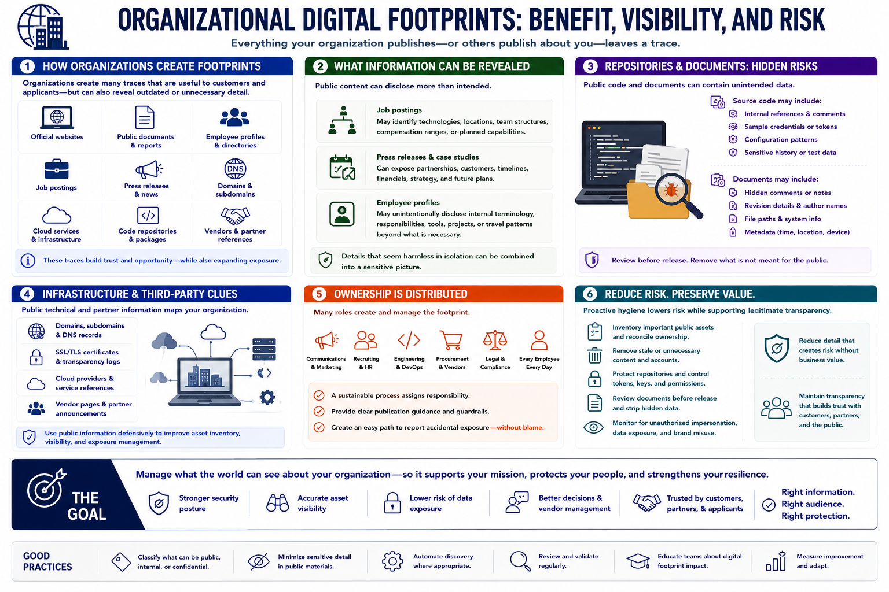

Organizational Digital Footprints
Connecting to LMS... Progress: in progress

Narration
Organizations create footprints through official websites, public documents, employee profiles, job postings, press releases, domains, cloud services, code repositories, and references from vendors or partners. These traces help customers and applicants, but they can also reveal outdated or unnecessary operational detail.
Job postings may identify technologies, locations, team structures, or planned capabilities. Press releases and case studies can expose relationships and timelines. Employee profiles may unintentionally disclose internal terminology, responsibilities, or travel patterns beyond what the business needs to publish.
Public repositories and documents require careful review. Source code may contain internal references, sample credentials, configuration patterns, or sensitive history. Documents can include hidden comments, revision details, author names, paths, or metadata that was not intended for release.
Domains, subdomains, certificates, and cloud-service references help describe the public attack surface. Vendor pages and partner announcements may reveal dependencies that the organization has not recorded internally. Public information should be used defensively to improve asset inventory and exposure management.
Ownership is distributed. Communications, recruiting, engineering, procurement, legal, and individual employees all contribute to the footprint. A sustainable review process assigns responsibility, provides publication guidance, and creates a path for reporting accidental exposure without blame.
Organizations should inventory important public assets, reconcile them with internal ownership, remove stale content, protect repositories, review documents before release, and monitor for unauthorized impersonation or data exposure. Reduction should preserve legitimate transparency while eliminating detail that creates risk without business value.